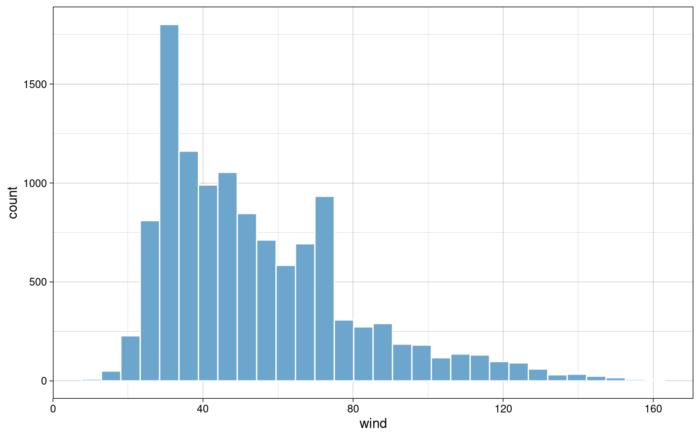
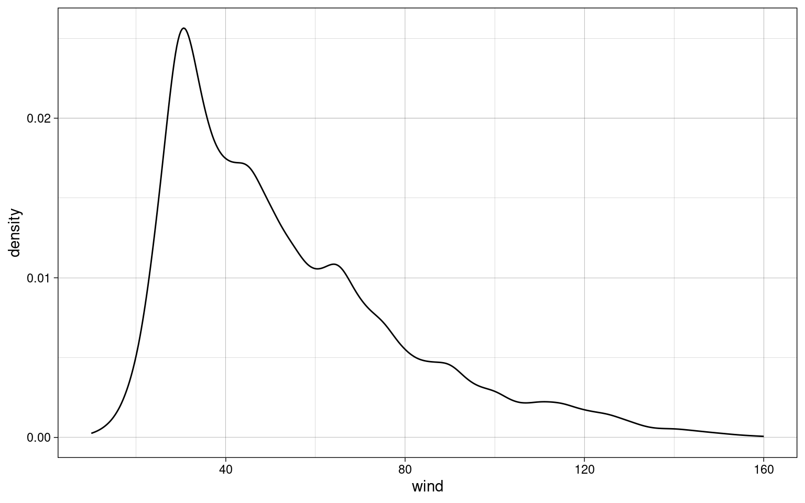

B.Sc. Psychologie Statisik I
Einleitung
still TODO
Wahrscheinlichkeitstheorie
Axiome der Wahrscheinlichkeit
Nicht-Negativät
Eine Wahrscheinlichkeit \(Pr\) eines Ereignisses \(E\) ist nie negativ.
\[Pr(E) \ge 0\]
Normalisierung
Die Summe der Wahrscheinlichkeiten \(Pr\) aller Ereignisse \(E_{i}\) in der Menge \(S\) der möglichen Ereignisse ist 1.
\[E_{i} \in S, Pr(S) = 1\]
\[\sum_{i=1}^{n} Pr(E_{i}) = 1\]
Additivität
Die Wahrscheinlichkeit \(Pr\) von wechselseitig ausschließlichen (\(\cup\)) Ereignissen \(E_{i}\) entspricht ihrer Summe.
\[Pr(E_{1} \cup E_{2} \cup \dots) = Pr(E_{1}) + Pr(E_{2}) + \dots\]
Verkettung von Wahrscheinlichkeiten
Wahrscheinlichkeiten von Eriegnissen, die gemeinsam auftreten (\(\cap\)) werden multiupliziert, um die Gesamtwahrscheinlichkeit zu ermitteln.
\[Pr(E_{1} \cap E_{2} \cap \dots) = Pr(E_{1}) \cdot Pr(E_{2}) \cdot \dots\]
Datenmanagement
Querformat/Langformat
Daten in Querformat: mehre Messungen des gleichen Merkmals in jeweils eigener Spalte
tibble(
code = c(1,2,3,4,5),
measurement.1 = rnorm(n = 5, mean = 100, sd = 10),
measurement.2 = rnorm(n = 5, mean = 100, sd = 10),
measurement.3 = rnorm(n = 5, mean = 100, sd = 10)
) -> wide| code | measurement.1 | measurement.2 | measurement.3 |
|---|---|---|---|
| 1 | 112.62954 | 84.60050 | 107.63593 |
| 2 | 96.73767 | 90.71433 | 92.00991 |
| 3 | 113.29799 | 97.05280 | 88.52343 |
| 4 | 112.72429 | 99.94233 | 97.10538 |
| 5 | 104.14641 | 124.04653 | 97.00785 |
Umwandlung in Langformat: Jede Messung in einer eigenen Zeile
wide %>%
pivot_longer(
cols = starts_with("measurement."),
names_prefix = "measurement.",
names_to = "measurement"
) -> long| code | measurement | value |
|---|---|---|
| 1 | 1 | 112.62954 |
| 1 | 2 | 84.60050 |
| 1 | 3 | 107.63593 |
| 2 | 1 | 96.73767 |
| 2 | 2 | 90.71433 |
| 2 | 3 | 92.00991 |
| 3 | 1 | 113.29799 |
| 3 | 2 | 97.05280 |
| 3 | 3 | 88.52343 |
| 4 | 1 | 112.72429 |
| 4 | 2 | 99.94233 |
| 4 | 3 | 97.10538 |
| 5 | 1 | 104.14641 |
| 5 | 2 | 124.04653 |
| 5 | 3 | 97.00785 |
Winsorisierung
- Werte außerhalb eines gewählten Intervalls werden abgeschnitten und durch auf die jeweilige nächste Intervallgrenze gesetzt
- verändert Mittelwert, Varianz und damit auch Standard-Abweichung
- verändert nicht den Median (sofern dieser nicht mit abgeschnitten wurde)
c(0, 1,2,3,4,5,6,7,8,9) %>% ifelse(. > 6, yes = 6, no = .)## [1] 0 1 2 3 4 5 6 6 6 6Häufigkeitstabelle
- absolute Häufigkeit
- kumulierte absolute Häufigkeit
- relative Häufigkeit
- kumulierte relative Häufigkeit
- meistens nach einem Merkmal sortiert
Beispiel: Häufigkeiten von Stürmen nach Jahr
data.short %>%
group_by(year) %>%
summarize(absolute = n()) %>%
ungroup() %>%
arrange(year) %>%
mutate(
absolute.cumulative = cumsum(absolute),
relative = absolute / sum(absolute),
relative.cumulative = cumsum(relative)
) %>% (knitr::kable)| year | absolute | absolute.cumulative | relative | relative.cumulative |
|---|---|---|---|---|
| 2010 | 402 | 402 | 0.1323239 | 0.1323239 |
| 2011 | 323 | 725 | 0.1063199 | 0.2386438 |
| 2012 | 454 | 1179 | 0.1494404 | 0.3880843 |
| 2013 | 202 | 1381 | 0.0664911 | 0.4545754 |
| 2014 | 139 | 1520 | 0.0457538 | 0.5003292 |
| 2015 | 220 | 1740 | 0.0724161 | 0.5727452 |
| 2016 | 396 | 2136 | 0.1303489 | 0.7030941 |
| 2017 | 306 | 2442 | 0.1007242 | 0.8038183 |
| 2018 | 266 | 2708 | 0.0875576 | 0.8913759 |
| 2019 | 330 | 3038 | 0.1086241 | 1.0000000 |
Split-Apply-Combine
- Split: Daten nach einem Merkmal gruppieren
- Apply: Aggregation ausführen (zb Summen, Mittelwerte, Minima/Maxima)
- Combine: Gruppierung aufheben
data.short %>%
group_by(name) %>%
summarize(wind.top = max(wind)) %>%
ungroup() %>%
arrange(-wind.top) %>%
top_n(10) %>%
(knitr::kable)| name | wind.top |
|---|---|
| Dorian | 160 |
| Maria | 150 |
| Matthew | 145 |
| Lorenzo | 140 |
| Michael | 140 |
| Igor | 135 |
| Joaquin | 135 |
| Gonzalo | 125 |
| Julia | 120 |
| Katia | 120 |
| Nicole | 120 |
| Ophelia | 120 |
Stratifizierung
Daten mit kontinuierlichen Merkmalen oder sehr vielen diskreten Ausprägungen werden in Strata (Gruppen) zusammengefasst, zB. um dann aggregierte Werte (Mittelwerte, Min/Max, etc.) in jeder Gruppe zu berechnen.
Beispiel: höchste Windgeschwindigkeit nach Jahrzehnt
data.long %>%
mutate(
decade = cut(
year,
breaks = seq(1970, 2030, 10),
labels = paste0(seq(1970, 2020, 10), "s"),
include.lowest = TRUE,
right = FALSE
)
) %>%
group_by(decade) %>% summarize(top.wind = max(wind)) %>%
(knitr::kable)| decade | top.wind |
|---|---|
| 1970s | 150 |
| 1980s | 160 |
| 1990s | 155 |
| 2000s | 160 |
| 2010s | 160 |
| 2020s | 135 |
Zentrale Tendenz
Mittelwert/Durchschnitt
- Summe aller einzelnen Werte, geteilt durch die Anzahl der Werte.
- mindestens intervallskaliert
- anfällig für Extremwerte
- übliches Symbol für Mittelwert einer Population: \(\mu\)
- übliches Symbol für Mittelwert einer Stichprobe: \(\overline{x}\)
\[\overline{x} = \frac{1}{n}\cdot\sum_{i=1}^{n} n_{i}\]
mean(data.long$pressure)## [1] 991.9805Modus
- Wert mit der größten absoluten Häufigkeit
- alle Skalenniveaus
data.long %>% group_by(month) %>% summarize(n = n()) %>% arrange(-n) %>% top_n(1)## Selecting by n## # A tibble: 1 × 2
## month n
## <dbl> <int>
## 1 9 4894Median
- Wert, der wenn alle Werte sortiert sind, in der Mitte steht. Bei gerader Anzahl stehen zwei Werte in der Mitte. Dann wird aus diesen der Mittelwert gebildet.
- midnestens ordinalskaliert
Ungerade Anzahl:
\[1, 2, 2, 4, \color{red}{5}, 5, 7, 8, 9\]
Gerade Anzahl:
\[1, 2, 2, 3, \color{red}{3}, \color{red}{5}, 5, 7, 8, 9\] \[\frac{3+5}{2} = \color{red}{4}\]
median(data.long$pressure)## [1] 999Dispersion
Variationsbreite
- Intervall aus Minimum und Maximum
\[\color{red}{1}, 2, 2, 4, 5, 5, 7, 8, \color{red}{9}\] \[VB = [1,9]\]
range(c(1,2,2,4,5,5,7,8,9))## [1] 1 9Quantile
Quantil: Wertebereich, in dem eine bestimmte Menge der Merkmalsträger liegt, \(Q_{p} \to p \%\)
Terzile: \(Q_{33.3}\), \(Q_{66.6}\), \(Q_{100}\)
Quartile: \(Q_{25}\), \(Q_{50}\), \(Q_{75}\), \(Q_{100}\)
Quintile: \(Q_{20}\), \(Q_{40}\), \(Q_{60}\), \(Q_{80}\), \(Q_{100}\)
Median entspricht \(Q_{50}\), Minimum und Maximum entsprechen \(Q_{0}\) bzw. \(Q_{100}\)
Berechnung
Position des Quantils: \(Q_{p} \to i = \frac{n}{p}\)
Wenn \(i\) ganze Zahl ist, dann ist \(Q_{p} = \frac{x_{i} + x_{i+1}}{2}\) (Mittelwert aus Position \(x_{i}\) und \(x_{i + 1}\))
Wenn \(i\) keine ganze Zahl ist, dann wird \(i\) aufgerundet (\(\lceil i\rceil\)) und \(Q_{p} = x_{\lceil i\rceil}\), der Wert an der jeweils nächst-höheren Stelle.
quantile(data.long$pressure, probs = seq(1/5, 5/5, 1/5)) #quintile## 20% 40% 60% 80% 100%
## 979 994 1002 1007 1022Interquartilsabstand (IQR)
Differenz zwischen erstem und drittem Quartil:
\[IQR = Q_{75} - Q_{25}\]
IQR(data.long$pressure)## [1] 21Varianz
- mittlere quadrierte Abweichung vom Mittelwert
- durch Quadierung werden die Abweichungen alle positiv, d.h. Richtung der Abweichung spielt für Varianz keine Rolle
- bezieht sich auf Gesamtpopulation (siehe Stichprobenvarianz)
- mindestens intervallskaliert
\[\sigma^2 = \frac{1}{n} \cdot \sum_{i=1}^{n} (x_{i} - \overline{x})^2\]
Stichprobenvarianz
- bezieht sich auf Stichproben aus einer Population
- enthält eine Korrektur (\(n - 1\)) gegenüber der allgemeinen Varianz
\[s^2 = \frac{1}{n - 1} \cdot \sum_{i=1}^{n} (x_{i} - \overline{x})^2\] Je größer \(n\), umso mehr nähert sich die Stichprobenvarianz der allgemeinen Varianz an:
\[\lim_{n \to \infty} \frac{1}{n-1} =
\frac{1}{n}\] R berechnet mit var standardmäßig die
Stichproben-Varianz:
var(data.long$pressure)## [1] 382.1348Standardabweichung
- positive Quadratwurzel aus der Varianz
- mindestens intervallskaliert
- bezieht sich auf gesamte Population
\[\sigma = \sqrt{\sigma^2}\]
Bei normalverteilten Merkmalen:
- 68.2% zwischen \(\overline{x}\pm 1\sigma\)
- 95.5% zwischen \(\overline{x}\pm 2\sigma\)
- 99.5% zwischen \(\overline{x}\pm 3\sigma\)
Stichproben-Standardabweichung
- positive Quadratwurzel aus der Stichproben-Varianz
- gleiche Korrektur wie bei Stichproben-Varianz
- bezieht sich auf Stichproben
\[s = \sqrt{s^2}\]
R berechnet mit sd standardmäßig die
Stichproben-Standardabweichung:
sd(data.long$pressure)## [1] 19.54827Variationskoeffizient
- Stichproben-Standardabweichung relativ zum Mittelwert
- verhältnisskaliert
\[CV = \frac{s}{\overline{x}}\]
sd(data.long$pressure) / mean(data.long$pressure)## [1] 0.0197063Histogramm
- gibt schnellen visuellen Eindruck der Verteilung empirischer Daten
data.long %>%
ggplot(aes(x = wind)) +
geom_histogram(bins = 30, color = "white", fill = "skyblue4") +
theme_custom
Kerndichteschätzer
- Schätzung der Wahrscheinlihckeitsdichte einer empirischen Verteilung
data.long %>%
ggplot(aes(x = wind)) +
geom_density() +
theme_custom
Standardisierung
Durch Standardisierung werden Werte miteinander vergleichbar, auch wenn sie z.B. in unterschiedlichen Größenordnungen oder Einheiten vorliegen.
Z-Werte / Z-Standardisierung
- spielen in vielen weiteren Berechnungen eine sehr große Rolle
Alle einzelnen Werte werden auf 0 zentriert und so skaliert, dass sie eine Standardabweichung von 1 haben:
\[z_{i} = \frac{x_{i} - \overline{x}}{s}\]
data.short %>% select(wind) %>%
mutate(wind.z = (wind - mean(wind))/sd(wind))## # A tibble: 3,038 × 2
## wind wind.z
## <int> <dbl>
## 1 30 -0.988
## 2 30 -0.988
## 3 40 -0.576
## 4 40 -0.576
## 5 55 0.0403
## 6 55 0.0403
## 7 55 0.0403
## 8 45 -0.371
## 9 35 -0.782
## 10 40 -0.576
## # … with 3,028 more rowsProzentränge
- geben an, wieviel Prozent einer Häufigkeitsverteilung den gleichen oder einen niedrigeren Wert in einem Merkmal haben
- mindestens intervallskaliert
- basiert auf Z-Werten
data.short %>% select(wind) %>%
mutate(
wind.z = (wind - mean(wind))/sd(wind),
wind.pr = pnorm(wind.z)
)## # A tibble: 3,038 × 3
## wind wind.z wind.pr
## <int> <dbl> <dbl>
## 1 30 -0.988 0.162
## 2 30 -0.988 0.162
## 3 40 -0.576 0.282
## 4 40 -0.576 0.282
## 5 55 0.0403 0.516
## 6 55 0.0403 0.516
## 7 55 0.0403 0.516
## 8 45 -0.371 0.355
## 9 35 -0.782 0.217
## 10 40 -0.576 0.282
## # … with 3,028 more rowsRang-basierte Normalisierung
- reduziert Skalenniveau zu ordinal
- erzeugt normalverteilte Werte
- sehr effektiv gegen Extremwerte, ohne sie komplett zu entfernen
Schritt 1: Werte sortieren
## # A tibble: 10 × 1
## x
## <dbl>
## 1 1
## 2 1
## 3 2
## 4 3
## 5 3
## 6 3
## 7 4
## 8 4
## 9 4
## 10 5Schritt 2: Ränge zuordnen
Bei gleichen Werten wird ein Rang mehrfach vergeben
## # A tibble: 10 × 2
## x n
## <dbl> <int>
## 1 1 1
## 2 1 2
## 3 2 3
## 4 3 4
## 5 3 5
## 6 3 6
## 7 4 7
## 8 4 8
## 9 4 9
## 10 5 10Schritt 3: bei geteilten Rängen Mittelwert bilden
## # A tibble: 10 × 3
## x n r
## <dbl> <int> <dbl>
## 1 1 1 1.5
## 2 1 2 1.5
## 3 2 3 3
## 4 3 4 5
## 5 3 5 5
## 6 3 6 5
## 7 4 7 8
## 8 4 8 8
## 9 4 9 8
## 10 5 10 10Schritt 4: Prozentränge und Z-Werte berechnen
\[y = \frac{r-0.5}{n}\]
## # A tibble: 10 × 5
## x n r p z
## <dbl> <int> <dbl> <dbl> <dbl>
## 1 1 1 1.5 0.1 -1.28
## 2 1 2 1.5 0.1 -1.28
## 3 2 3 3 0.25 -0.674
## 4 3 4 5 0.45 -0.126
## 5 3 5 5 0.45 -0.126
## 6 3 6 5 0.45 -0.126
## 7 4 7 8 0.75 0.674
## 8 4 8 8 0.75 0.674
## 9 4 9 8 0.75 0.674
## 10 5 10 10 0.95 1.64Nach der Rang-basierten Normalisierung sind \(p\) und \(z\) normalverteilt.
Korrelation
TODO
Modellbildung
TODO